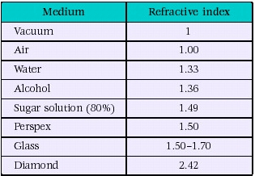

Physics
Refraction of Light

To verify laws of refraction using Glass Slab
Objective:
To trace the path of a ray of light passing through a rectangular glass slab for different angles of incidence and to measure the angle of incidence, angle of refraction and angle of emergence and interpret the result.
Theory:
When light travels from one medium to another medium, it generally bends or refracts. The law of refraction gives us a way of predicting the amount of bend. The law of refraction is also known as Snell's law, named after Willobrord Snell, who discovered the law in 1621. Snell's law gives the relationship between angles of incidence and refraction for a wave impinging on an interface between two media with different indices of refraction.
Refraction :
When we talk about the speed of light, we're usually talking about the speed of light in a vacuum, which is 3.00 x 108 m/s. When light travels through something else, such as glass, diamond, or plastic, it travels at a different speed. The speed of light in a given material is related to a quantity called the index of refraction, n, which is defined as the ratio of the speed of light in vacuum to the speed of light in the medium:
index of refraction: n = c / v, where the speed of light in a medium is 'v' and 'c' is the speed of light in vacuum.
Rules Of Refraction
Rule-1: When a light ray travels from a rarer medium to a denser medium, the light
ray bends towards the normal.
Rule-2: When a light ray travels from a denser medium to a rarer medium, the light
ray bends
away from the normal.
Example of Refraction
If you place a pencil in a glass of water, you will see that the pencil appears to be bent. Now, you know for a fact that the pencil is not bent at all, it just appears to be so. This is the effect of refraction of light.